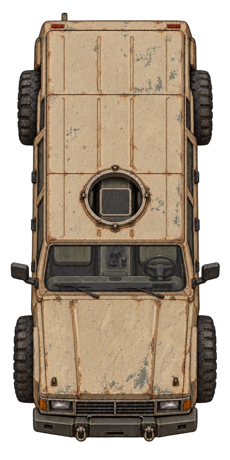
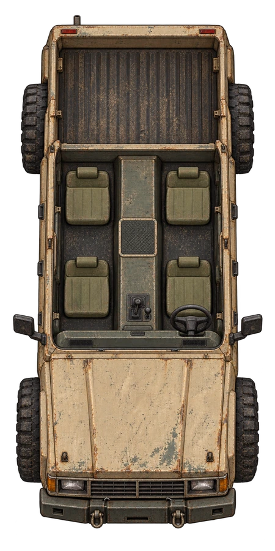
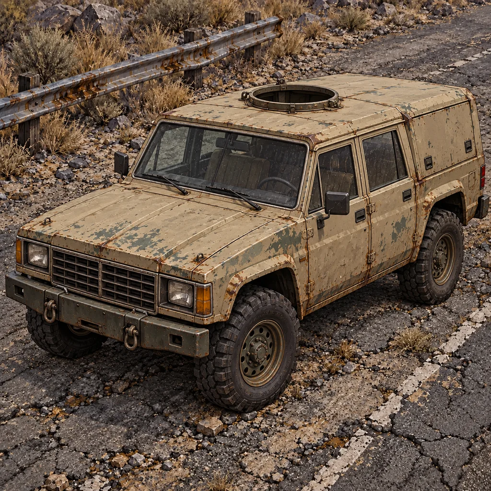

ROOF_ON · odniesienie

ROOF_OFF · przełączany dach

Portret

Cztery koła, cztery fotele i centralne stanowisko pod włazem. Przód auta jest skierowany w dół. W wersji otwartej usunięte są szyby, górne słupki i dach tylnego przedziału.


